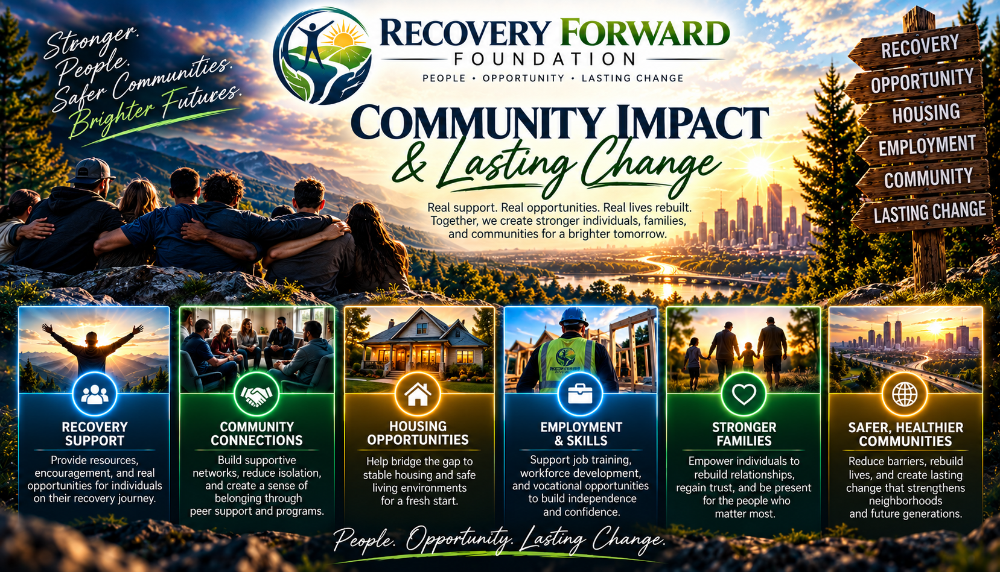
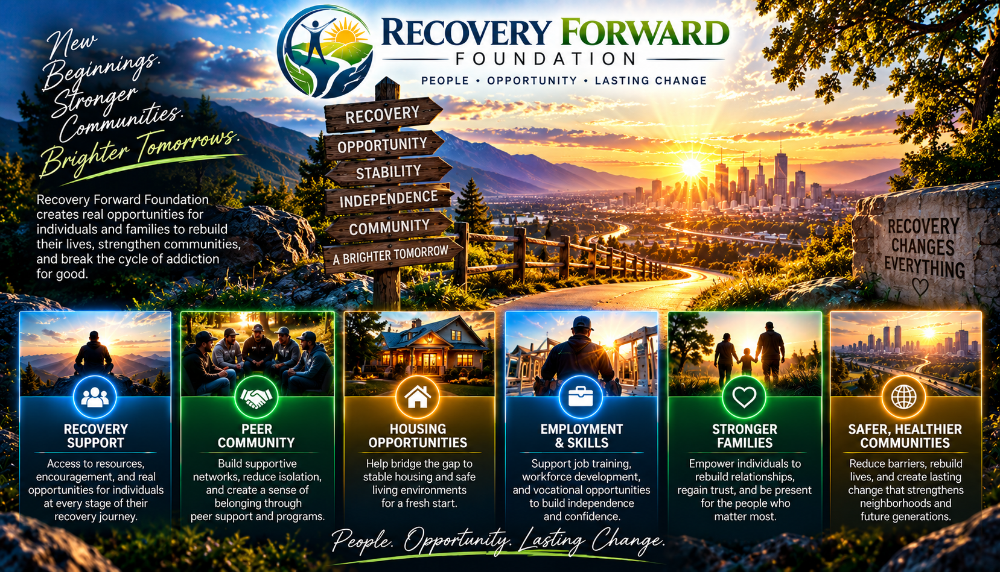

RECOVERY • OPPORTUNITY • A FUTURE FORWARD
RECOVERY IS A BEGINNING,
NOT AN ENDING.
Recovery Forward Foundation exists to help people build stable, productive, and meaningful lives during and after addiction recovery.
OUR MISSION
Helping people move forward.
Completing treatment is an important milestone, but recovery does not stop when treatment ends. Building a new life can require transportation, employment, education, housing stability, continued recovery support, and access to everyday resources.
Recovery Forward Foundation is being built to help bridge that gap.
WHAT WE DO
Support designed around moving forward.

Recovery Milestone Grants
Financial assistance designed to recognize meaningful recovery milestones and help participants continue building stability.
Grants are being developed; eligibility and funding depend on approved program rules and resources.
Employment & Education
Support aimed at helping people pursue employment, job readiness, training, certifications, education, and other opportunities for long-term independence.
Rebuilding Stability
Assistance focused on practical barriers that can make rebuilding life after treatment more difficult, including transportation and other essential needs.
Community Resources
Connecting participants with recovery-oriented resources and organizations that can support their continued progress.
Stronger Families
Recovery affects families too. Stability, employment and community connection can help people rebuild relationships and trust.
Safer, Healthier Communities
When people in recovery have a path forward, neighborhoods and communities benefit. The foundation intends to work with partners who share that goal.
PRIVACY BY DESIGN
Your recovery story deserves privacy.
Our application system is being designed around privacy-conscious identifiers rather than publishing sensitive personal information.
Applicants receive an RCGI ID that can be used to reference an application and track its progress.
THE PROCESS
A clear path forward.
Apply
Submit a privacy-conscious application describing the support you are seeking.
Receive Your RCGI ID
Keep your unique identifier. It is used to reference your application without placing unnecessary personal information into public records.
Review & Milestones
Applications and applicable recovery milestones can be reviewed through the foundation's verification process.
Move Forward
Approved assistance is intended to help remove barriers and create opportunities for continued recovery and independence.
Submitting an application does not guarantee approval or a particular amount.
OUR VALUES
Recovery deserves more than a second chance.
We believe people in recovery deserve an opportunity to build a future defined by where they are going, not only by where they have been.
Recovery Forward Foundation is being built around dignity, accountability, privacy, transparency, opportunity, and long-term recovery.
Dignity
We believe people in recovery deserve an opportunity to build a future defined by where they are going, not only by where they have been.
Accountability
Program decisions are meant to follow documented verification and authorization procedures.
Privacy
The application system is being designed around privacy-conscious identifiers rather than publishing sensitive personal information.
Transparency
Supporters and participants should be able to understand how the foundation operates and how resources are intended to be used.
Opportunity
Recovery deserves more than a second chance. It deserves a pathway toward employment, education and independence.
Long-Term Recovery
Recovery does not stop when treatment ends. The foundation is being built to help bridge the gap between treatment and a stable, independent life.
YOUR NEXT STEP FORWARD
Recovery today.
A brighter tomorrow.
Whether you're rebuilding your own life, supporting someone in recovery, or looking for a way to help the mission, there is a place for you at Recovery Forward Foundation.
